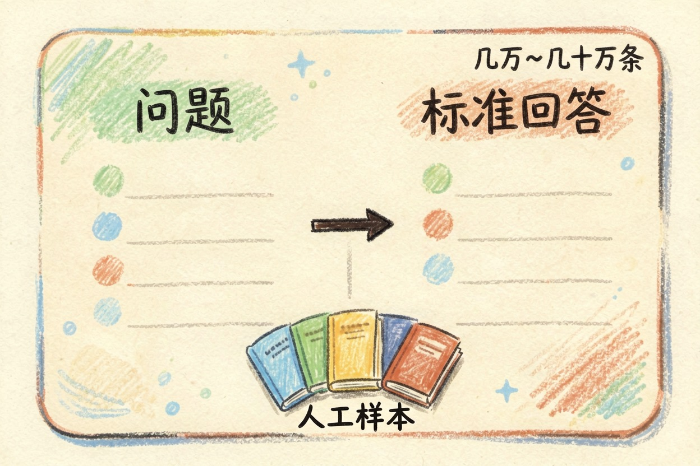
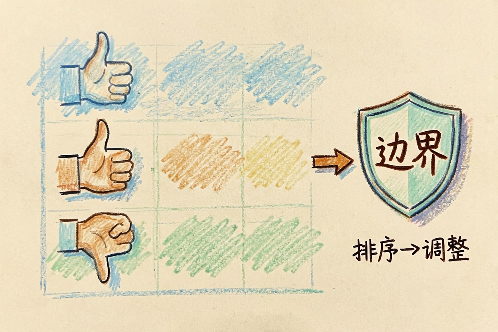
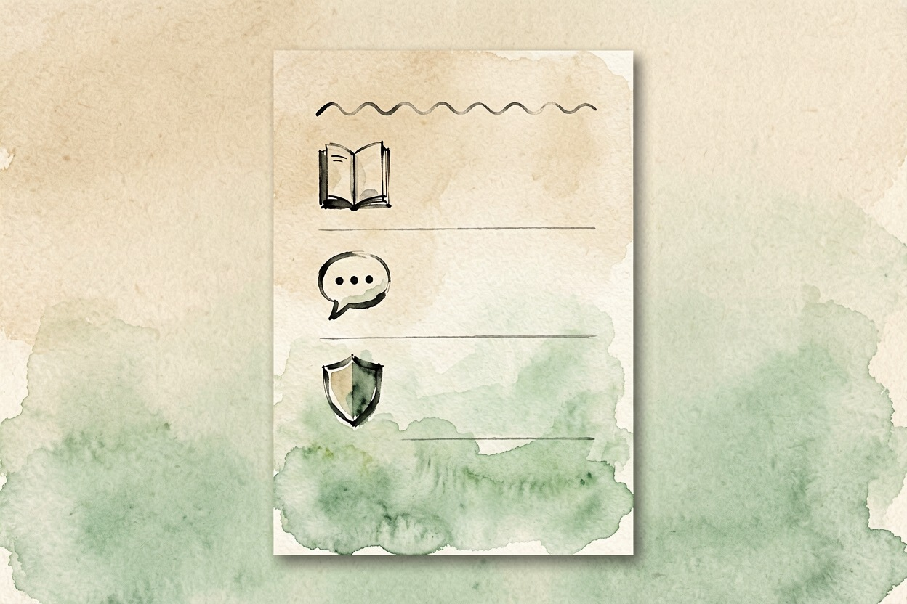

大模型是怎么训练出来的？三个阶段一次讲明白 — Learntide
训练分三步走：先海量阅读，再学着听指令，最后学规矩。搞懂这三步，模型答错和拒答的原因也就清楚了。
大模型怎么训练出来的：三步走完的一条流水线
大模型怎么训练出来的？说白了是一条三步流水线。先预训练，再微调，最后对齐。三步用的数据不同，教给模型的东西也不同。
很多人以为模型是被人一条条教出来的。它更像先读完一座图书馆。再被人纠正说话方式，最后被划出红线。想补一下底层概念，站内那篇讲大模型是什么的文章可以先看。
第一步预训练：把语言规律读出来

预训练是最费钱的一段。模型要读进海量文本，网页、书籍、代码都有。它做的事只有一件：看着前面的字，猜下一个字是什么。猜错了就调一点内部的数值。然后再猜。
这样重复上万亿次，语言的规律就被压进了参数里。语法、常识、行文习惯，都是这么捡回来的。这一步只有大厂扛得住。一次训练要动用成千上万张加速卡，跑上几个月。
有意思的是，这个阶段的模型还不会好好回答问题。你问它一句。它可能接着往下编，因为它学到的本事就是续写。
第二步微调：学会听懂人话

接下来是指令微调。人工写好一批「问题—标准回答」的样本，让模型照着学。样本量比预训练小得多。几万到几十万条就够。
它学的不是新知识，是应答的格式。被问就回答。该分点就分点，不知道就说不知道。这一步做完，模型才像个能对话的助手。
预训练：全网文本 → 学会预测下一个字（周期按月计，几千张卡）
指令微调：人工问答样本 → 学会按要求作答（周期按天计，几十张卡）
对齐训练：人类偏好打分 → 学会该说与该挡（周期按天计，投入更轻）企业和个人在这一层还能继续加料。用自己的数据再训一轮，让它贴合本行业的说法。这就是常说的微调。
第三步对齐：知道什么不该说
第三步叫对齐。做法是让人给模型的多个回答排序，模型照着高分方向调整。久而久之，它就摸清了什么样的回答受欢迎，哪类请求要挡回去。
AI 说话的语气、边界、拒答规则，基本都在这一步定下来。它也是过度拒绝的来源。判断标准是统计出来的，边界模糊时宁可保守。你遇到正常问题被挡，多半就是这里在起作用。
这一步还会顺带调整回答长度和结构。有些模型爱写小标题、爱加总结段，习惯就是这么养出来的。
三步走完就定型，别指望它自己更新
训练结束那一刻，模型的知识也就冻在那里了。之后发生的事，它一概不知。除非你给它开联网，或者直接把资料贴进去。
还有一点值得记住：三个阶段的产物是叠在一起的。回答里的常识来自第一步，条理来自第二步，分寸来自第三步。哪一步的数据有偏差，成品就带着那份偏差。参数规模只决定容量上限，不保证每一步都做扎实。
所以别把模型当成一本随时更新的百科。它更接近一个读过很多书、又被训练过说话方式的人。知道大模型怎么训练出来的，你就不会再对它的错误感到意外。

本文信息核对于 2026-08-08。AI 产品的价格、免费额度与功能变动频繁，实际以各工具官网当前说明为准。